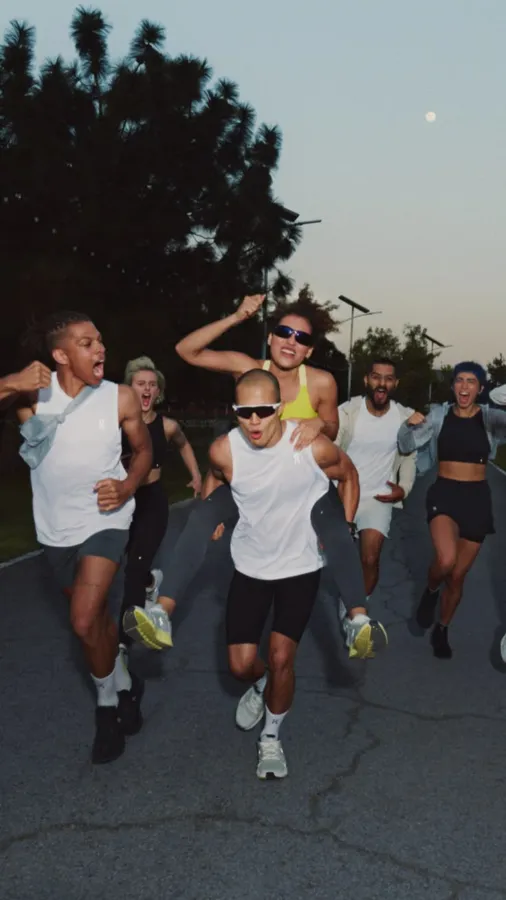
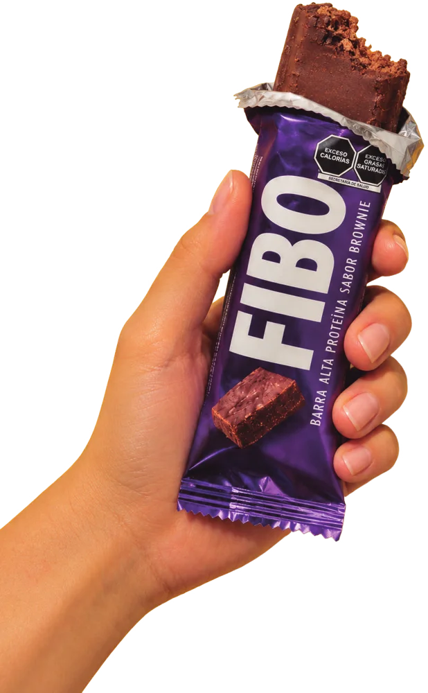
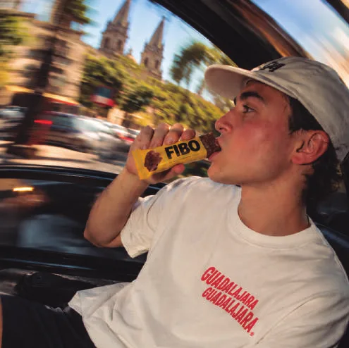
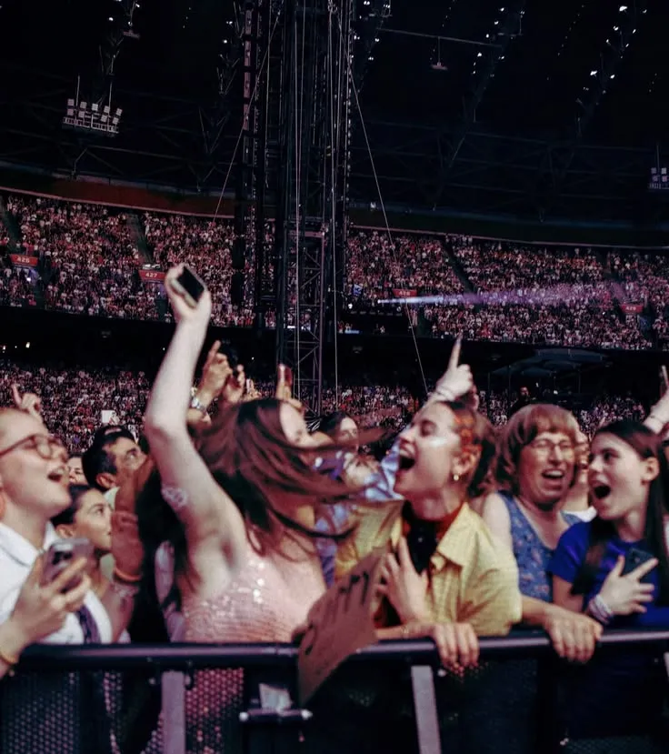
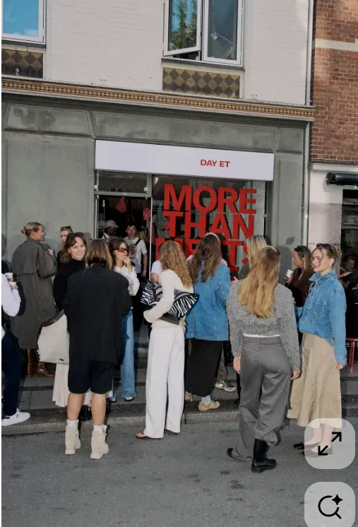

La barra que llena tu día.
Conectar el producto con los momentos cotidianos de Guadalajara, más allá del gimnasio.
Índice de la presentación
Marketing · Comunicación · Diseño
Un nuevo impulso para la marca.
FIBO tiene las bases para competir. El reto es convertirlas en una marca relevante y un negocio sostenible.
Abre cada pestaña →
0 g
de proteína por barra.
0%
de presencia en 53 puntos de venta auditados.
● 36 con barra · ○ 17 sin barra
+0%
en facturación, enero–agosto 2026 vs. 2025.
$5.27 M → $5.91 M · cada bolita = $100 mil
0%
de margen bruto en 2026, frente a 42.5% en 2025.
● margen 2026 · ○ lo que se perdió
Cifras de facturación interna (venta bruta); margen preliminar con costo por validar.
FIBO tiene producto y distribución. El reto es recuperar relevancia, proteger la rentabilidad y construir una razón clara para elegirla.
Conectar el producto con los momentos cotidianos de Guadalajara, más allá del gimnasio.
Validar producto y claims, estructurar precios y proteger el margen.
Impulsar distribución, punto de venta, contenido, experiencias y e-commerce.
Escenario de inversión externa recomendado, sujeto a aprobación, más producto para activaciones.
Una estrategia para recuperar presencia y construir crecimiento rentable.
FIBO · Historia de marca 03 / Antecedentes
De la nutrición deportiva a una marca que busca conectar con la vida cotidiana.
El Molino crea su planta de barras para maquila y desarrollo de marca propia.
Nace FIBO BAR con una identidad centrada en el entrenamiento y la nutrición deportiva.
Colaboraciones deportivas, nuevos sabores y líneas, y entrada a cadenas como Nutrisa.
La actividad de marketing disminuye, las redes se enfrían y la identidad pierde consistencia.
Se consolida el portafolio de cuatro sabores y se define el concepto rector «Con FIBO te encuentras».
Periodos históricos sujetos a validación documental.
La marca no dejó de tener potencial. Dejó de construir sobre él.
FIBO conserva un producto con atributos funcionales, una operación propia y distribución activa. Sin embargo, la falta de gestión estratégica ha ampliado la distancia entre lo que el producto puede ofrecer y lo que la marca logra comunicar, vender y representar.
Las ventas crecen, pero la rentabilidad se deteriora y la operación depende de muy pocos clientes. La distribución permite sostener el volumen, pero no garantiza una demanda diversificada ni una relación directa con el consumidor.
+12.1% en ventas · Margen bruto: 42.5% → 37.2%FIBO está presente en puntos de venta, pero carece de materiales propios, exhibición diferenciada y comunicación constante. El consumidor puede encontrar la barra sin entender qué la hace relevante ni por qué elegirla frente a otras opciones.
68% de presencia en los 53 puntos auditados · 0 con material de marca en las fotos revisadasLa convivencia de diferentes identidades, nombres, precios y claims genera una experiencia fragmentada. Sin criterios comunes, el producto no siempre se presenta de forma coherente y algunas promesas requieren validación técnica y regulatoria.
2 logos · 4 denominaciones · 5 precios al públicoLa proteína se incorporó al consumo cotidiano y la competencia se diversificó. Los gramos de proteína ya no constituyen, por sí solos, una diferencia exclusiva; FIBO necesita articular sus atributos funcionales con una ocasión de consumo, una identidad y una razón de elección propias.
De suplemento deportivo a alternativa para la vida cotidianaLa evolución debe comenzar por ordenar y validar; continuar con una propuesta de valor diferenciada, y traducirse en presencia, comunicación y crecimiento rentable.
Pasa el cursor o toca cada carpeta · Cifras vinculadas a las fuentes del diagnóstico.
Relanzar FIBO para construir una marca relevante, generar demanda propia y crecer de forma rentable.
Fortalecer la marca, impulsar la elección y recompra del producto, ampliar las oportunidades comerciales y reducir la dependencia de pocos clientes mediante una gestión medible.
Mejorar distribución y rotación, recuperar clientes inactivos y desarrollar nuevos canales de venta.
Definir una propuesta de valor diferenciada y convertir el reconocimiento en consideración y elección.
Reactivar la comunidad, recuperar el comercio electrónico y medir el tráfico y las ventas atribuibles a campañas.
Validar costos, ordenar precios, asegurar información confiable y establecer un sistema de indicadores.
Revisiones mensuales y metas numéricas definidas a partir de líneas base verificadas.
Cada frente debe tener un responsable, un indicador, una fuente de información y un periodo de evaluación.
Propósito, posicionamiento, personalidad e identidad.
Validación técnica, calidad, atributos y promesas de comunicación.
Rentabilidad por canal, recuperación de clientes y diversificación comercial.
Visibilidad, exhibición, disponibilidad y rotación.
Contenido, comunidad, alcance e interacción.
Prueba del producto vinculada con oportunidades de compra.
Disponibilidad, fichas de producto, accesos y conversión.
Tablero de indicadores, líneas base, seguimiento y decisiones.
FIBO · Descripción de marca
FIBO es la marca propia de El Molino Aditivos Alimenticios, empresa ubicada en Zapopan que cuenta con una planta dedicada a la producción y maquila de barras.
Su principal diferenciador operativo es que cuenta con infraestructura propia para producir FIBO, con certificación de inocuidad FSSC 22000 y capacidad instalada de hasta 7 millones de barras al año.
FIBO ya tiene operación y distribución: el reto del proyecto no es empezar desde cero, sino fortalecer lo que existe y abrir nuevas oportunidades.
Mensaje clave: FIBO ya cuenta con producto, clientes y canales; ahora necesita consolidar su presencia y generar demanda que fortalezca su crecimiento.
“FIBO es una barra de proteína hecha en Jalisco, pensada para acompañar el día, no solo el entrenamiento.”
Definición propuestaFIBO se comunicaba principalmente desde el territorio de los suplementos deportivos y el entrenamiento.
Entre clases, en la oficina, durante un trayecto o después de entrenar.
FIBO combina un formato de 65 gramos con un alto aporte de proteína y fibra, diseñado para acompañar distintos momentos del día.

Portafolio actualFIBO · 09 / AnálisisHecha en Jalisco
FIBO concentra su oferta en una barra de proteína de 65 g, disponible en cuatro sabores con códigos de color propios para facilitar su identificación en el anaquel.
Mayor participación en el volumen surtido.
Lectura: Mejor potencial: crece y es el mejor calificado, pero no está en Nutrisa ni en Amazon.
Canal: 7-Eleven sí la compra; no está en Nutrisa ni ha llegado a Amazon.

El sabor con mayor margen estimado.
Lectura: En Amazon, 5 de 24 displays vendidos en el último envío.
Canal: 7-Eleven compra únicamente Cookies & Cream y Chocolate.

El más vendido entre los clientes atendidos directamente por FIBO.
Lectura: Público fiel: 32% de los displays en tiendas directas.
Canal: Fuerte en tiendas directas.

El sabor con menor margen estimado.
Lectura: Funciona en Nutrisa (mayor rotación, precio algo mayor). Tiene prueba de exhibición planeada.
Canal: Es el de mayor rotación en Nutrisa.
Precio promedio de venta: $23.82 MXNToca una barra para ver su análisisCostos por validar con Producción
01 · A primera vista
02 · Lo que hay detrás
×3 compras en un año
2 sabores: solo Cookies & Cream y Chocolate
−17% cae el resto de la cartera sin 7-Eleven
03 · Lo que dice el consumidor
Conclusión
Hoy el movimiento de sabores refleja la compra de un cliente más que el gusto del consumidor.
La prueba a ciegas y la encuesta dirán qué sabores impulsar, mantener o reformular.
⚠ Por conciliar: el FODA reporta +40% y +32% para Cookies & Cream y Chocolate (posible periodo distinto). La prueba de exhibición de Frutos Rojos está programada en 7-Eleven, que no compra ese sabor: confirmar tiendas.
Vida de anaquel: 18 meses.
La demanda cambia según el canal:
Porcentajes de barras surtidas, no necesariamente de las preferencias finales del consumidor.
Crear una ficha maestra para cada sabor con código de barras propio, tabla nutrimental, ingredientes confirmados, costo validado y fotografía oficial del empaque.
Con esta base, FIBO podrá registrar correctamente sus cuatro sabores en cada canal, mejorar el control del inventario y distinguir las preferencias reales del consumidor de las decisiones de compra de sus clientes.
65 g · 22 g de proteína — Para compra de impulso y consumo inmediato.

6 barras de un mismo sabor — Para tiendas y venta en línea.

144 barras · 24 displays — Dirigida al mayoreo y la distribución.

Tres presentaciones comercialesVida de anaquel: 18 meses
22 g de proteína · 10 g de fibra · 65 g
Detalles
Actualmente, FIBO comunica una promesa funcional: 22 gramos de proteína en una barra práctica y fácil de llevar. Sin embargo, la proteína por sí sola ya no basta para diferenciarla en una categoría donde muchas marcas ofrecen cantidades similares.
FIBO no necesita competir únicamente por gramos de proteína. Su oportunidad está en unir proteína, fibra, sabor y valor en una experiencia cotidiana, y convertir esa combinación en una marca con la que las personas conecten.
La combinación de proteína y fibra responde a la necesidad de una colación que ayude a calmar el hambre entre actividades.
Sus cuatro sabores inspirados en postres ofrecen una experiencia que va más allá de los atributos nutrimentales.
En la comparación de ocho barras realizada por el equipo, FIBO registró un costo de $2.16 por gramo de proteína, por debajo de varias alternativas importadas analizadas.
Es una marca hecha en Jalisco, con producción propia y una historia empresarial detrás del producto.
Una promesa funcional basada principalmente en el aporte nutrimental.
FIBO combina proteína, fibra y sabores disfrutables en una barra pensada para acompañar los momentos entre una actividad y otra.
El producto deja de hablar únicamente de nutrientes y comienza a formar parte de la vida cotidiana: una pausa, un antojo, un trayecto o un momento para ti.
Una barra de proteína que combina saciedad, sabor y practicidad, con una propuesta de valor accesible para acompañar el día.
Identificar qué pesa más al comprar FIBO: proteína, sensación de saciedad, sabor o precio.
Comprobar si la idea de una pausa rica en medio del día resulta relevante, auténtica y memorable para el público objetivo.
Validar qué atributos distinguen a FIBO de las alternativas y cuáles pueden convertirse en razones concretas de compra.
FIBO tiene más azúcares y calorías que algunas alternativas, mientras que otras destacan por sus ingredientes o por no tener sellos de advertencia. Su diferenciación debe construirse sobre sus atributos reales, no sobre una promesa de superioridad saludable.
Modelo comercial B2B
El Molino factura principalmente a clientes comerciales que compran el producto para revenderlo o distribuirlo. Por eso, los ingresos de FIBO dependen directamente de las compras de sus clientes, mientras que la venta al consumidor final ocurre principalmente a través de terceros.
Ejemplo ilustrativo con un precio al consumidor de $50 MXN.
El Molino recibe en promedio $23.82 por barra. Después de un costo de producción estimado de $14.39, quedan $9.43 de margen bruto, antes de otros gastos operativos y comerciales.
Rentabilidad y vulnerabilidades del modelo
El modelo enfrenta tres riesgos que afectan su estabilidad y rentabilidad.
Prioridades para fortalecer el modelo
Conclusión: el reto de FIBO no es únicamente vender más, sino construir un modelo comercial más rentable, diversificado y capaz de sostener su crecimiento.
La cadena comercial de FIBO
01 · Origen
*En Nutrisa, falta confirmar quién realiza el abastecimiento directo a las tiendas.
Después de la compra
Lo que factura El MolinoLo que se vende en cada tienda
2,442 piezas en el centro de distribución de Nutrisa105 tiendas en cero3 tiendas 7-Eleven visitadas, agotada
0 materiales FIBO en los puntos visitadosAcuerdos pendientes
FIBO ya tiene distintas vías para llegar al mercado; el reto es conectar esas vías con la disponibilidad y la venta real al consumidor.
Canales actuales
Algunos funcionan y crecen; otros están detenidos o tienen problemas que se pueden resolver con relativa rapidez.
Es el canal que más ha crecido y el que explica buena parte del aumento en ventas del año. En el recorrido, la barra estaba en 35 de las 45 tiendas visitadas. Se vende en promedio a $51 y la cadena solo compra dos sabores: Cookies & Cream y Chocolate.
Retos · ninguna tienda con material propio · tres tiendas agotadas · solo dos sabores · compite en el mismo anaquel con Wild Protein, que tiene exhibidores propios, y con 7-Select, la marca propia de la cadena, a la mitad del precio.
Maneja tres sabores y no tiene Cookies & Cream. Frutos Rojos, el sabor más débil en otros canales, aquí es el que más rota, aunque se vende un poco más caro: $49.
Retos · 2,442 piezas en su centro de distribución mientras 105 tiendas están en cero · falta Cookies & Cream · la barra está registrada en su sistema como «FOBO BAR».
Lleva a FIBO a tiendas naturistas, abarrotes, carnicerías, escuelas, gimnasios y otros negocios de Guadalajara. Los gimnasios son los que más venden por punto y el Country Club es el número uno de toda su cartera.
Oportunidad · activar los puntos faltantes · priorizar las zonas de mayor potencial · desarrollar el segmento de carnicerías.
Es el canal más cercano al público deportivo, aunque también el que paga el precio más bajo por barra entre los principales clientes.
Un canal pequeño que también forma parte de la distribución.
En línea la situación es la más débil: el canal está prácticamente detenido. El detalle está más abajo.
Fuente: Puntos de venta FIBO (Notion, 18 oct 2026). Los puntos de Más Natural Más Sano van en su ubicación exacta. 7-Eleven, Nutrisa y Farmacias del Ahorro se muestran agrupados por municipio, porque la base solo tiene su dirección.
Mapeo 7-Eleven · recorrido de campo
La barra está, pero revuelta: sin espacio propio, sin material y con sabores incompletos.
Toca la pila para ver la siguiente foto
Incluye las 130 tiendas Nutrisa del inventario nacional cargado en Notion; el inventario completo de 246 tiendas no está en la base.
¿Dónde está la mayor oportunidad de crecimiento?
puntos potenciales: en la red de Más Natural Más Sano, 137 tiendas de las mejores categorías todavía no venden FIBO.
La mitad de la oportunidad se concentra en estas cuatro zonas. Tócalas para verlas en el mapa.
Mayor venta totalAbarrotes$159,510enero a septiembre
Mayor venta por puntoGimnasios$14,600promedio por punto
Número uno de la carteraCountry Club$35,100Más Natural Más Sano
Segmento menos explotadoCarnicerías34puntos de alto nivel sin FIBO
E-commerce
5 Chocolate2 Brownie0 Frutos RojosSin vender
Del último envío de 72 displays solo se vendieron siete, y Cookies & Cream nunca se envió. Además, revendedores como Fitstore y Savesta venden la barra en la misma página, compitiendo con la propia marca.
Nadie del equipo tiene acceso a la cuenta, y ahí solo es rentable vender paquetes de más de 299 pesos.
Cuando tiene producto, vende el display de seis barras a 258 pesos, unos $43 por barra.
No es un canal actual
Farmacias del Ahorro a veces se menciona como canal actual, pero no lo es: en el recorrido no se encontró FIBO en ninguna de las tres sucursales visitadas. Debe tratarse como una oportunidad de expansión.
FIBO tiene canales reales y con potencial, pero ninguno está trabajado a fondo: en las cadenas falta exhibición y surtido completo, en los distribuidores hay puntos sin abrir y en línea el canal está prácticamente detenido. Ordenar los canales actuales puede generar crecimiento antes de abrir canales nuevos.
$34 M de venta bruta desde abril de 2019, sin estrategia de marketing ni inversión publicitaria. 106 clientes en ese periodo; hoy siguen activos 28.
0Mene–ago 2025
0%creció 2026: $5.91 M
de enero a agosto
0barras surtidas,
casi 10% más
*Todas las cifras son venta bruta.
El costo por barra sube más rápido que el precio. FIBO vendió más pesos, pero ganó $42,782 menos que el año anterior. El peor mes fue julio: el margen cayó de 45.6% a 29.9%.
0%costo por barra
$12.90 → $14.39
0%precio de venta
$22.45 → $22.92
Margen bruto42.5%37.2%
Problema 02 · Concentración
En línea, el mismo patrón: Amazon generó $209 mil y 434 pedidos entre mayo de 2025 y septiembre de 2026. Hoy está en cero.
El reto del relanzamiento no es solo vender más, sino vender mejor: con precios que protejan el margen y una base de clientes y canales más diversificada.
El producto funciona, la barra se vende y la planta tiene capacidad de sobra, pero nadie gestiona la marca de forma integral. Los problemas no vienen de una falla de origen, sino de años sin dirección. Se agrupan en seis.
El centro (0) es ausencia del problema; cada esquina (100%) es el problema completo. Cada eje usa un dato real del diagnóstico.
Ejemplo: 87 de los 105 clientes no tienen correo registrado, por eso «Información» llega a 83%.
Ninguno de estos problemas es de producto ni de nombre, y todos tienen solución.
Solo sobre esa base tendrá sentido invertir en que más gente conozca la marca.
Definición de la categoría
En México no existe una definición legal: cualquier barra puede llamarse «de proteína», aunque tenga 3 gramos. Por eso usamos una propia: una barra proteica aporta al menos 15 g de proteína por pieza y al menos 20% de su energía viene de la proteína.
FIBO · 22 g≈37% de su energía viene de la proteína
 3.3 gBarrinolas avena
3.3 gBarrinolas avena ≈10 g7-Select · Bimbo Proteína+22 gFIBO
≈10 g7-Select · Bimbo Proteína+22 gFIBOFranja azul: Profeco encontró que la mayoría de las barras comerciales aporta 8–12 g por pieza.
FIBO está en un punto poco común: tiene la proteína de las premium, pero un precio intermedio.


20 gramos o más de proteína, casi siempre importadas, como Quest o Barebells. Cuestan entre $55 y más de $100.

10 a 15 gramos y precios de $15 a $37. Dominan el anaquel de conveniencia.


Priorizan ingredientes naturales y la ausencia de sellos, con cantidades medias de proteína.
Desde la NOM-051, publicada en marzo de 2020, los alimentos llevan sellos de advertencia al frente.
Sellos de advertencia al frente del empaque.
Con sellos, no se puede destacar «alto en proteína» de forma protagónica al frente.
Exceso de calorías y de grasas saturadas. Es lo más común: cerca del 40% de las barras analizadas tiene dos.
Cada vez más marcas usan «sin sellos» como argumento de venta.
Los productos con sellos no se pueden vender en escuelas, incluidas preparatorias y universidades.
Para el consumidor no se trata de elegir entre barras, sino de elegir qué comer entre comidas: yogur, bebidas de proteína, pan dulce, galletas y botanas.


Así se ve el anaquel
Recorrido en tiendas 7-Eleven de Guadalajara: barras de proteína, granolas, galletas y pan en el mismo espacio.
Toca la pila para ver la siguiente foto
El espacio de partida
En el anaquel de conveniencia, donde se vende la mayor parte de FIBO, no hay otra barra con 20 g de proteína o más que cueste $50 o menos.
Advertencia: algunos estudios, como el de Grand View Research (467.5 millones de dólares), usan una definición mucho más amplia de la categoría. No conviene compararlos con las cifras de FIBO.
✷Tamaño del mercado
Según IMARC Group, la fuente recomendada, las barras de proteína en México valían 59.8 millones de dólares en 2025: unos $1,100 millones de pesos al año (a $18.50 por dólar).
FIBO vende unos $8.9 millones de pesos al año a sus clientes: cerca del 0.8% del mercado. Con el precio que paga el consumidor, sube a alrededor de 2%. Son estimaciones propias, útiles como orden de magnitud.
crece la categoría cada año en promedio, según IMARC: de $59.8 M a $89.9 M de dólares en 2034.
creció FIBO este año, bastante más que el mercado.
de participación, como máximo: hay un espacio muy amplio para crecer sin que el mercado se expanda.
creció el yogur alto en proteína de Danone. Bimbo y Lala ya lanzaron productos con proteína para el día a día: más personas la buscan, y llegan más competidores con más recursos.
FIBO paga IEPS de 8% por tener más de 275 calorías por cada 100 g. Existe una propuesta para subirlo a 20%: encarecería la barra en una categoría donde el precio pesa mucho.
Ojo: el crecimiento de FIBO viene casi por completo de un solo cliente, así que no se puede leer como una ganancia sólida de participación.
Cómo leer las cifras
Seis tendencias están cambiando la forma en que los mexicanos comen entre comidas. Algunas juegan a favor de FIBO; otras le exigen ajustes.
Expediente 06 · 2026
N_01
DATO CLAVE
Fuente:
El joven activo en tránsito de Guadalajara: el segmento con más tamaño, el que mejor encaja con la nueva dirección de la marca y el que compra donde FIBO ya está.
Se puede extender hasta los 35. Trabaja, o estudia y trabaja, y pasa buena parte del día fuera de casa.
Cerca de 1.1 millones de personas de 18 a 29 años viven en la zona metropolitana de Guadalajara.
Trabaja unas 41 horas a la semana y dedica cerca de 79 minutos al día a trasladarse.
Gana en promedio $33.80 por hora: una barra de $50 equivale a hora y media de trabajo.
7-Eleven y OXXO, cerca de estaciones, universidades y oficinas; también cafeterías y gimnasios.
Un día de Ana · 07:00 a 21:00
0minutos al día en traslados
0de ellos en camión o Macrobús
0de trabajo a la semana
Muchos combinan trabajo, estudio y, cada vez más, ejercicio: Smart Fit tiene más de 1.3 millones de usuarios en México, la mayoría de 20 a 35 años. Aun así, la falta de tiempo es la principal razón para no hacer ejercicio.
Tamaño · ZMG
18 a 29 años · ≈1.1 M12 a 17 años
Cada punto ≈ 10 mil personas · IIEG con datos de CONAPO. Además, más de 330 mil estudiantes de educación superior en Jalisco.
Trabajo · 20 a 24 años
Participación en el mercado laboral · ENOE. La proporción sube después de los 25.
Precio · poder adquisitivo
Precio hoy $50Aceptable para comprar seguido $35–40hipótesis
Tres barras por semana ≈ una décima parte de su ingreso mensual. Salario mínimo 2026: $315.04 diarios. Foco: ingreso propio arriba del promedio, NSE C y C+.
Decisión de compra · hipótesis
Orden relativo según la investigación; el largo de las barras no es un porcentaje medido.
Lo que ve en el anaquel
Restricción: desde 2025 los productos con sellos no se venden dentro de preparatorias ni universidades. A los estudiantes hay que alcanzarlos fuera del campus.
Ana · 24 años
Estudia y trabaja. Sale de casa a las 7 de la mañana y regresa a las 9 de la noche. Busca algo que le quite el hambre, que se le antoje y que no sea pan. No conoce FIBO, pero si la ve, la prueba.
Antes de cerrar el perfil, la encuesta debe confirmar
Necesidades, motivaciones y barreras
La proteína hace que alguien voltee a ver una barra.
El sabor y el precio deciden si la compra.
La textura decide si la vuelve a comprar.
La necesidad
Busca llenarse y, si entrena, recuperarse.
Es la principal razón para no hacer ejercicio (MOPRADEF), y empuja a comer algo práctico en el camino.
creció el yogur alto en proteína de Danone: ya no es exclusiva del gimnasio.
Proteína por pieza
Los consumidores la describen como «llenadora».
Lo que lleva a elegir una marca
del crecimiento en ocasiones de snacks viene de las que se eligen «por el sabor» (Kantar). La mitad de los mexicanos come botanas porque saben bien (Innova).
FIBO$50
Las que más ve$25–37
En conveniencia se mide por pieza, no por gramo. Por gramo de proteína FIBO sale bien frente a las importadas (≈$2.27 por gramo).
de los jóvenes de 20 a 29 años considera importante al menos un sello (INSP). La mitad de los consumidores lee las etiquetas con más atención que antes.
No existe en México un estudio de cuánto está dispuesto a pagar el consumidor por una barra de proteína. Hipótesis interna: $35–40 para comprarla seguido. A $50, para un joven de ingreso medio, FIBO es una compra ocasional.
Dudas que FIBO debe poder responder
Toca una pregunta para ver la respuesta.
FIBO ya resuelve la necesidad de fondo.
Es una barra que llena y tiene más proteína que la mayoría. Lo que hoy la frena depende de ella misma:
La encuesta y la prueba de sabor confirmarán cuál pesa más.
0 MIN/DÍA EN TRASLADOS
Ocasiones de consumo
El día del joven tapatío está hecho de trayectos, clases, jornadas largas y, cada vez más, ejercicio. Cada momento es una oportunidad para la barra, y después un territorio creativo de «Con FIBO te encuentras».
Algo que se coma en la mano, sin refrigerar y sin ensuciar.
02 · prioridad 1Entre clasesClases largas y hambre a media mañana.
03 · prioridad 1En la jornada laboralEl hambre de media mañana o media tarde, sin salir de la oficina.
04 · prioridad 2Después de entrenarLa ocasión con mayor intención de compra.
05 · prioridad 3Snack entre comidasCompite contra el pan dulce y la botana.
06 · prioridad 4Viajes y recreaciónEn el camino, la caminata o el día de campo.
Viajes diarios por modo · Encuesta Origen-Destino 2023
Dónde estar: tiendas de conveniencia junto a las estaciones


Insight En la zona Centro, la de más tránsito, la cobertura de FIBO fue de las más altas del recorrido.
El grupo de edad más numeroso de la zona metropolitana es el de 15 a 24 años.
Condición: desde 2025 los productos con sellos no se venden dentro de las escuelas. FIBO debe estar en las tiendas de enfrente y en las paradas que llevan a ellas.
Las tiendas de enfrente de


41.8 hpromedio semanal en México
México es el país que más horas trabaja de la OCDE. Con la reforma: menos horas, pero más concentradas.


Insight Justamente en Andares, el personal de 7-Eleven no conoce la barra.
Vía RecreActiva · cada domingo
100–300 milpersonas cada domingo, según la fuente
73 kmde calles
✓el municipio permite activaciones con solicitud previa


0de los adultos en ciudades hace actividad física en su tiempo libre
1.3 Musuarios de Smart Fit en México
0gimnasios a los que llega FIBO a través de Edgar García
Solo el 23% de los mexicanos dice no comer entre comidas. La media tarde es el momento favorito para los snacks.
Compite contra
Insight En Más Natural Más Sano, los abarrotes son el negocio que más vende FIBO, y las carnicerías la oportunidad menos explotada.
+33 Mvisitantes recibió Jalisco en 2025
13.3 Mse concentraron en Guadalajara
Las escapadas de fin de semana son parte de la vida tapatía. FIBO puede estar en tiendas de carretera, gasolineras y en paquetes en línea para llevar.
Para priorizar
FIBO no es solo para el gimnasio, sino para los momentos reales de la ciudad. Esa es la base de los territorios creativos de la marca.
Proceso de compra · 7 etapas · en cada una FIBO puede ganar o perder al consumidor
01 · Descubrimiento
FIBO hoy · débil11 meses sin publicar. 0 de 27 fotos de anaquel con material de la marca. En algunas tiendas el personal no conoce la barra.


02 · Comparación
El riesgoSi no queda claro en un segundo por qué cuesta más, la comparación se pierde.
Ilustrativo. Precios de 7-Select, Wild Protein y FIBO del recorrido; los de pan, galletas y avena son referencia.
03 · Evaluación de precio y beneficios
FIBO hoyNo lo comunica en el punto de venta, y se vende en cinco precios distintos según el canal.
04 · Disponibilidad
32%de los puntos visitados no tenía FIBO
100+sucursales de Nutrisa en cero
0cadenas con los cuatro sabores
✕no está en OXXO
 AGOTADO
AGOTADO
05 · Compra
7-ELEVEN · CAJA 2
Café$32.00
FIBO 65 g$51.00
Tiempo de decisión3 s
06 · Evaluación del sabor · el momento decisivo
La textura pesa tanto como el sabor.
Sabores de postre
Llena
«Reseca» · la queja más repetida
Podría empeorar mientras más tiempo pase la barra en el anaquel.
07 · Recompra y recomendación
FIBO hoyNo mide la recompra, no tiene sistema de reseñas ni de seguimiento, y 87 de 105 clientes no tienen correo registrado.
Pocos la conocen
No siempre está en la tienda
No se entiende por qué cuesta más
La textura puede decepcionar
Una campaña puede generar interés, pero si la barra no está, no se ve o no convence, ese interés se pierde.
El largo de cada fuga es ilustrativo: muestra el orden del recorrido, no un porcentaje medido.
Investigación primaria
Hasta hoy todo lo que sabemos del consumidor viene de fuentes indirectas. FIBO no ha hecho una investigación propia: primero, lo que ya dicen en línea; después, el diseño para confirmar o corregir las hipótesis.
≈430 calificaciones públicas. Para dimensionarlo:
FIBO · total≈430
Wild Protein · 1 listado en ML360
Quest · 1 barra en Amazon13,000+
Cada cuadro = 100 opiniones.Calificación promedio en tiendas en línea.
Toca las hojas para pasar a la siguiente. Temas resumidos de las reseñas públicas, no citas textuales.
Opiniones sobre… EL SABOR
Lo que más destacan los comentarios positivos es el sabor: les gusta y lo recomiendan.
a favorOpiniones sobre… LA PROTEÍNA
Valoran la cantidad de proteína y que la barra sirve para entrenar.
a favorOpiniones sobre… LA TEXTURA
La queja que más se repite: que está «algo seca».
en contraOpiniones sobre… EL HAMBRE
Para algunos no quita el hambre, y el sabor no convence a todos.
en contraOpiniones sobre… EL PRECIO
En Mercado Libre se percibe bien. En Amazon cuesta $58 a $65, contra $43 en fibo.mx.
depende del canalRiesgo en… LA COMUNICACIÓN
Algunos listados dicen «22 g de proteína whey», cuando es principalmente de soya, y «sin azúcar añadida», aunque lleva jarabes.
corregirSon pocas opiniones, vienen solo de compradores en línea y no representan al consumidor de 7-Eleven: sirven para plantear hipótesis, no para sacar conclusiones.
Esquema mixto: universidad aliada para la prueba de sabor y las entrevistas, y panel en línea para la encuesta.
400 jóvenes de 18 a 35 años en la ZMG y 100 usuarios de gimnasio. Cuotas por edad, sexo, municipio y ocupación. Incluye precio aceptable con Van Westendorp.
Primero a ciegas y luego con la marca a la vista. Mide agrado, dulzor, textura y sequedad.
A la salida de tiendas 7-Eleven y de gimnasios.
Diez entrevistas a profundidad.
Prueba del empaque y de lo que comunica.
«Con FIBO te encuentras» contra el mensaje funcional.
Definida desde antes de levantar la investigación.
Simenos del 15% reconoce la marca→la prioridad será la visibilidad
Siel precio aceptable queda por debajo del actual→ajustar el precio por canal
Siun sabor queda bajo el nivel de agrado→reformular o retirar
Simás de 1 de cada 5 la encuentra demasiado seca→trabajar la textura con Producción
Si«Con FIBO te encuentras» no supera al mensaje funcional→replantear la comunicación
Costo estimado
$90–120 milpor cotizar con proveedoresCalendario · 2026
A tiempo para ajustar precio, mensajes y sabores antes de la temporada de propósitos de año nuevo.
Panorama competitivo
01 · DirectoOtras barras de proteína en el mismo anaquel.
02 · Por el momentoTodo lo que podría comer en lugar de una barra: yogur alto en proteína, pan dulce, una galleta. Mucho más grande y, en conveniencia, probablemente más difícil.
Dentro y fuera de las barras · toca cada grupo
Posiciones aproximadas con los rangos del análisis. Toca cada círculo.
Las cuatro amenazas principales
El cliente más grande de FIBO vende su propia barra en el mismo anaquel, a la mitad del precio.
Distribución en todo el país y una marca que todos conocen. Lanzada en abril de 2026.
Chilena, recibió 25 millones de dólares para crecer en México. La más visible en conveniencia, con material propio y «sin sellos».
Acostumbran al consumidor a buscar proteína fuera de las barras.
En resumen
Ganar por precioGanar por etiqueta limpia
Mucha más proteína que las accesibles, a menor precio que las importadas, en una barra que llena. La condición: que se entienda en un segundo frente al anaquel.
(36 referencias · una sola medida)
La medida
No todas las barras tienen la misma proteína. Por eso se comparan con una medida común.
Se registróMarcaProteínaPesoPrecio por piezaPrecio por paqueteCanalFecha
La regla · pesos por cada 10 g de proteína
fibo.mx$19.55
Misma barra, cuatro precios. En Amazon FIBO cuesta 44% más que en su propia tienda y queda cerca de Quest o Barebells.
Siete referencias salen más baratas por gramo. Varias son barras masivas de 10 g que cuestan poco por pieza, pero tienen menos de la mitad de proteína que FIBO.
+44%
En Amazon, cerca de Quest o Barebells, que tienen más reconocimiento
≈

La misma barra cuesta distinto en cada canal. El precio por 10 g pasa de $19.55 a $28 según dónde se compre.
 Evolution
EvolutionPor 10 g · Evolution en paquete: $30 la barra · −30%

Clif Builder's · 20 g · también más barata por gramo
«El mejor valor del segmento de 20 g o más»
Esta frase ya no se puede sostener
Evolution es una marca mexicana de nutrición deportiva. Su barra de 65 g tiene 22 g de proteína, igual que FIBO, y cuesta 30% menos por gramo.
$51FIBO $36Wild Protein
$36Wild ProteinEl consumidor ve $15 de diferencia… sin nada que le explique por qué
Por 10 g de proteína salen prácticamente igual

Al lado, 7-Select en ≈$25 · menos de la mitad de proteína
En el anaquel de 7-Eleven se decide la mayor parte de la compra. FIBO promedia $51 y Wild Protein unos $36.


$33–42
Quest · Barebells · think! · Pure Protein


+$45
David · no cow
Las barras premium cuestan entre $33 y $42 por cada 10 g de proteína. David y no cow superan los $45.

3.3 g10 g
Barrinolas: compite su versión proteína, no la de avena
Fiber OneNakd
Retiradas: sus datos no coinciden con ningún producto oficial

10 g13 g
Power Crunch
Promo$149
Wild Protein · caja de 5, precio actual
El benchmark obligó a corregir cuatro datos de la comparación anterior.
ConclusiónPara que el argumento funcione, hacen falta dos cosas: ordenar el precio por canal y explicarlo en el anaquel.
Benchmark · 7 marcas
Los mismos criterios para todas
Lo que se revisó
La conclusión
FIBO hoy
«22 gramos de proteína»
…y todavía no tiene su idea.

El feed de la competencia · toca cada historia
Habla a
Tono
Territorio
Personalidad
Visual
Territorio ocupado.
Diferenciador
Lo respalda
!
Y FIBO, ¿qué tiene en su perfil?
Mismos criterios, aplicados a FIBO hoy.
Los territorios ya tienen dueño
BarebellsAgotadoWild ProteinAgotadoZebra REALBARAgotadoQuestAgotado Bimbo · BarrinolasAgotadoEvolutionAgotado
Bimbo · BarrinolasAgotadoEvolutionAgotadoFIBO no puede pelear ninguno
Pero hay un espacio que nadie ocupa
ParaLa vida diaria tapatía
DóndeGuadalajara, Jal.
La barra que llena en el día a día.
TerritorioDisponible
ConceptoCon FIBO te encuentras
ValorMás proteína por tu dinero
Territorio disponible.
La barra que llena en el día a día de Guadalajara
Con FIBO te encuentras
iSolo se sostiene si la barra cumple en sabor y textura.
Primero investigamos qué promociones y activaciones han hecho los competidores. Todo lo que FIBO propone ya está comprobado en el mercado.
Promociones reales de la competencia en México y del mundo. Filtra por tipo y abre la fuente de cada una.
Quién hace qué
Cada una responde a un hallazgo de la investigación y se puede medir.
01 · Punto de venta
Material en el anaquel de 7-Eleven: colgante, cintillo y precio por gramo junto a la barra.
En el anaquel se decide la mayor parte de la compra, y hoy ninguna tienda tiene material propio de FIBO. El consumidor ve $15 de diferencia contra Wild sin explicación.
02 · Exhibidor
Exhibidor de piso y de caja con los cuatro sabores, para tiendas con más rotación, gimnasios y universidades.
Wild Protein ya tiene exhibidor propio en caja. Ahí se compra por impulso.
03 · Sampling
Stand de prueba en universidades, la Vía RecreActiva y carreras, con cupón para comprarla en el 7-Eleven más cercano.
FIBO solo se sostiene si la barra cumple en sabor y textura. La prueba vence la duda, y el cupón la convierte en compra.
04 · Creadores y UGC
Creadores tapatíos y clientes que graban sus momentos con FIBO: el trayecto, la clase, la jornada, el domingo.
Ninguna marca habla de la vida cotidiana de la ciudad: todas muestran el producto o el gimnasio. Ese espacio está libre.
05 · Mapa «te encuentras»
Campaña local con piezas en lugares reales de la ciudad, que lleva al 7-Eleven más cercano.
Ninguna marca es tapatía. Hablar de lugares que todos reconocen hace a FIBO de aquí y convierte «Con FIBO te encuentras» en algo literal.
06 · Precio y e-commerce
Precio coherente por canal, paquetes en fibo.mx y Amazon alineado con la tienda propia.
En Amazon FIBO cuesta 44% más que en su tienda y queda junto a Quest y Barebells. Con el precio en orden, «más proteína por tu dinero» se sostiene en todos los canales.
Tácticas revisadas
0Cada activación la usa al menos un competidor en México o en el mundo.
Tiendas 7-Eleven con FIBO
El anaquel de 7-Eleven es el canal que más creció. Ahí FIBO ya está y solo le falta explicarse.
La barra que llena en el día a día de Guadalajara. Ninguna marca es tapatía ni habla de la ciudad.
Cada acción con su indicador
Ningún objetivo se da por cumplido sin evidencia: cada activación lleva un cupón, un código o una tienda que medir.
Cómo ayuda a las metas
Escenario de inversión externa recomendado: $19,000 MXN más producto para activaciones, sujeto a aprobación.
Síntesis
La categoría crece y la proteína ya es parte del día a día, pero el anaquel está lleno de marcas que prometen sabor, etiqueta limpia o precio bajo. El espacio de FIBO no está en tener más proteína.
Conclusión
A partir de aquí, la estrategia de marca debe responder cuatro preguntas.
Bloque 4Diagnóstico y estrategia de marca
Ya se analizó el negocio, el producto, el mercado, la competencia y al consumidor. Ahora toca decidir qué es FIBO, para quién, qué promete y cómo se diferencia.
Diagnóstico
Donde gana
Esa base es difícil de construir.
Donde pierde
Del producto ▾
Ninguno es definitivo, pero hay que resolverlo.
 Hoy en el anaquel · sin material propio
Hoy en el anaquel · sin material propio
En una frase
No parte de cero
Arrastra las notas
Reconocimiento
Comunicación
Comunidad
0
Exhibición
Lo que hace falta
Hoy conviven piezas que no se hablan entre sí. Desplázate y mira cómo se ordenan.
Las siguientes láminas responden
Análisis FODA
Toca un cuadrante para abrirlo
Lo que dice el FODA en conjunto
Problema central
De todos los hallazgos se desprende uno solo, que explica casi todos los demás: la marca no se gestiona, y lo que ve el consumidor no refleja la nueva dirección.
Cada área resuelve su parte
La barra «se produce cuando la piden». No hay un responsable que cuide cómo se ve, dónde está, a qué precio se vende ni qué se dice de ella.
Cuatro causas
El reto del relanzamiento
La respuesta no es una campaña. Es un cambio en la forma de gestionar la marca.
Objetivos de marca
No cuánto vender: si la marca cumple estos seis objetivos, las ventas tienen una base más sólida y menos dependiente de dos clientes.
Pasa el mouse para abrir cada mazo · toca para barajar
Como en los objetivos del proyecto, no se fijan metas numéricas sin un punto de partida. La encuesta, la prueba de sabor y el piloto de exhibición lo darán en noviembre; de ahí salen las metas de los primeros seis meses.
Todos apuntan a lo mismo: que FIBO deje de ser una barra que está en el anaquel y se convierta en una marca que la gente reconoce, encuentra y elige.
Objetivos de marketing
De que conozcan a FIBO a que la vuelvan a comprar. Toca una carta para abrirla.
Público objetivo
La decisión ya está tomada. La investigación la afina y la ordena en prioridades, para que la marca no intente hablarle a todos al mismo tiempo.
Lo que une a todo el público
Es la base del posicionamiento y de «Con FIBO te encuentras». La encuesta al consumidor confirmará si estas prioridades son correctas y qué mensaje funciona mejor para cada grupo.
Propuesta de valor
Hoy«22 gramos de proteína en una barra práctica»Verdadera, pero ya no diferencia: casi todas las barras hablan de proteína.
NuevaUna barra que sí te llena.No es solo el número: es lo que ese número logra.
La promesa
Frame · Por qué esta promesa
«Una barra que sí te llena.
Con FIBO te encuentras.»
Frame · Lo que no hay que decir
Frame · Antes de lanzar
La propuesta no es «más proteína», sino lo que esa proteína hace por la persona: una barra que sí te llena, que rinde más por lo que pagas y que te acompaña en tu día.
Hoy no hay un diferenciador exclusivoLo construimos con una combinación
Sus 22 g de proteína en 65 g son su mejor argumento, pero Evolution ofrece las mismas cifras a menor precio. La diferencia no puede descansar en un solo atributo: tiene que ser una combinación que ningún competidor reúna.
Frente a cada competidor
Dónde FIBO no debe diferenciarse
Esos espacios ya tienen dueño. Competir ahí desgastaría la marca y el margen.
Cómo se vuelve propia
La barra tapatía que sí te llena y te acompaña en tu día.Un lugar que nadie podrá copiar fácilmente, aunque tenga las mismas cifras en la etiqueta.
Bloque 4Personalidad de marca
Curiosa, cercana, inesperada, local y sensorial. Así habla, se ve y se comporta FIBO.
( 0.1 ) Silueta de marca · no es una persona en particular
[01] ESENCIA
FIBO es la curiosidad de descubrir algo que te gusta, en el momento menos esperado.
Convierte una barra de proteína en una invitación a explorar lo cotidiano. No necesita que cambies tu vida: se integra a la que ya tienes.
No promete transformar a nadie. Propone abrirse a lo que puedes descubrir.
FIBO se acerca desde el antojo, la curiosidad y la vida diaria, no desde la exigencia del rendimiento físico. Pertenece a una categoría de deporte, pero conecta mucho más allá del gimnasio.
Funcionalidad que informa.
Antojo que atrae.
Descubrimiento que conecta.
de proteína. Informa para elegir.
de fibra. Un dato que se mantiene igual en todo.
sabores: Brownie, Chocolate, Frutos Rojos y Cookies & Cream. Despiertan el deseo.
personalidad que construye la relación con la marca.
Si solo habla de nutriciónSe vuelve una barra más, intercambiable.
⇄Si solo habla de estilo de vidaPierde de vista el producto que vende.
Salir de lo conocido y seguir la curiosidad. Explorar también es cambiar de ruta, probar otro sabor o aceptar un plan improvisado.
Cotidiano · espontáneo · accesible
El «hombre común»: cercanía y pertenencia. Hace que explorar no se vuelva aspiracional ni exclusivo. Está en los mismos lugares que su comunidad.
Natural · cercano · de aquí
Hace memorable una interacción, pero siempre al servicio de la curiosidad, la cercanía o el contexto.
No se construye sobre superar límites físicos.
No busca educar todo el tiempo ni ser autoridad nutricional.
DE: FIBO · PARA: QUIEN SE CRUCE CON ELLA
Estudia, trabaja, se mueve por la ciudad y combina días ocupados con planes improvisados. Su encanto está en encontrar posibilidades en momentos comunes.
| Concepto | Detalle | Cant. |
|---|---|---|
| En la mochila | Audífonos, cargador y algo rico para compartir | 3 |
| Guarda | Recomendaciones de lugares | ∞ |
| Propone | El siguiente plan | 1 |
| Conoce la ciudad | Porque la vive, sin clichés tapatíos | ✓ |
| No es | Influencer, nutrióloga, atleta, coach ni adolescente caricaturizada | 0 |
| TOTAL | Curiosidad genuina | |
* Es una guía creativa, no la definición del público. Edad, hábitos y contextos se contrastan con la investigación de consumidores.
Cómo validarlo: encuesta de personalidad de marca (escala 1 a 5) con rasgos de Aaker. Comparar FIBO con Wild y Quest, si son referentes confirmados para el público. Medir antes y repetir después de la campaña.
La meta no es solo sacar puntos altos: es ocupar un territorio distinto y mover la percepción hacia donde queremos.
[06] LOS CINCO RASGOS
Good Traits✦
[09] ACTITUD · 4 PRINCIPIOS
Divertida sin ser infantil. Espontánea sin improvisar. Funcional sin ser solo deportiva. Cercana sin ser genérica. Nunca usa la inseguridad corporal para vender.
El tono cambia según la situación. La personalidad, no.
Territorio verbal propio
Lenguaje que evitamos
Requieren revisión de Calidad y Legal
Datos que siempre van igual
Principio visual: FIBO se reconoce aunque el logo no sea lo principal. Con recursos consistentes, no solo con fotos bonitas.
Cómo se comporta
Antes de publicar · validar con Calidad y Legal
Los sellos de advertencia no sustituyen la revisión de cada pieza.
Hay que separar el efecto de la personalidad de otros factores: precio, promoción, cobertura, inventario y anaquel. Una campaña atractiva no resuelve sola la distribución.
[18] REGLA DE ORO
FIBO no te dice quién tienes que ser.
Te invita a descubrir qué más te gusta.
Si una idea no genera curiosidad, no conecta con el producto o no aporta a «Con FIBO te encuentras», probablemente no es de FIBO.
Territorio creativo y concepto rector
Ya es el concepto rector. Aquí no se cambia: se desarrolla. Qué significa, qué permite crear y cómo ayuda a que FIBO crezca, se diferencie y venda.

«Con FIBO te encuentras» ya es el concepto rector. Aquí no se cambia: se desarrolla. Qué significa, qué permite crear y cómo ayuda a que FIBO crezca, se diferencie y venda.
↑ Mueve el cursor: así se ven los encuentros.
Descubrir algo que no esperabas
Un sabor que termina gustándote, un lugar al que quieres regresar, alguien con quien coincides. Muchos descubrimientos empiezan con algo pequeño: probar algo diferente.
FIBO entra desde el antojo. No dice cómo vivir ni en quién convertirse: invita a descubrir.
Los contextos son posibles. El territorio es más grande.
Definición
«Los pequeños descubrimientos que hacen que lo cotidiano tenga algo nuevo.»
La oportunidad
Funcional+Antojable=Invitación a descubrir
⚠ Ojo: no hay que decir que «nadie más habla de descubrir». La diferencia se demuestra comparando a la competencia.
4 necesidades
La creatividad sola no resuelve disponibilidad, anaquel, cobertura ni rentabilidad. Trabaja junto con la estrategia comercial.
Para investigar · no está validado
Comparar con
Qué revisar de cada una
«FIBO ocupa un territorio que nadie más tiene» solo va en la presentación si la auditoría lo respalda. Si no, se habla de oportunidad de diferenciación.
Hipótesis · pendiente de validar
«No necesito cambiar todo para descubrir algo nuevo.»
…a veces basta con encontrar algo que no esperaba.
La encuesta tiene que separar 3 preguntas
¿Descubrir en lo cotidiano es relevante para el público?
¿FIBO es creíble en ese territorio?
¿La gente relaciona el territorio con FIBO y su producto?
Que alguien encuentre atractiva la idea no significa que recuerde FIBO ni que quiera comprarla.
Con FIBO te encuentras
Un sabor, una experiencia, una coincidencia o un gusto que no sabías que tenías. Conecta con experiencias humanas y, al mismo tiempo, las une con el producto y la marca.
Su valor depende de 3 condiciones
Mantener el concepto como decisión estratégica y validar sus expresiones antes de invertir más.
Una sola plataforma
¿Cuál va primero? Depende del objetivo
No hace falta repartir el esfuerzo igual. Depende del objetivo, la etapa, el presupuesto y la disponibilidad.
Papel del producto
Protagonistaen una pieza de sabor
Detonadorde una conversación en una activación
Conversiónen una pieza de disponibilidad
Personalidad + arquitectura creativa
La personalidad define cómo se dice
Lo que permanece 🔒
Lo que puede cambiar ↻ · prueba a mezclar
La pregunta no es «¿cómo mostramos FIBO en una pausa?», sino «¿qué descubrimiento volvemos experiencia y qué papel tiene FIBO?»
Organizadas por función
Canales y recorrido comercial
No todos los canales cuentan la historia completa. Una publicación que genera conversación no siempre vende; una pieza comercial no tiene que ser emocional.
Límites + medición
Comprensión, atractivo y diferencia vs. un mensaje solo funcional.
Cada pieza por separado: inversión, alcance, disponibilidad, prueba.
Repetir medición, comparar ventas y documentar aprendizajes.
Las metas se fijan con una línea base. Precio, promociones y cobertura también cuentan: no todo es mérito de la creatividad.
10 frentes
La investigación estaba prevista del 7 al 20 de octubre. Antes de presentar algo como validado, hay que revisar el avance real del levantamiento: fechas, muestra, método y resultados.
FIBO 2.0Sistema estratégico de mensajes
Que todo, desde un talker en 7-Eleven hasta una presentación para una cadena, se reconozca como FIBO sin repetir siempre las mismas frases.
FIBO 2.0 · Sistema estratégico de mensajes
Regla: cada mensaje cumple una función para la persona y refuerza a FIBO con los momentos reales del día y con una barra que sí llena.
Los temas que sostienen la promesa. Toca uno.
Mensajes tácticos por objetivo
Liderar con el beneficio («te llena») y respaldar con el número (22 g).
De atributo a argumento
No se convierten en promesas de energía, rendimiento, pérdida de peso ni beneficios metabólicos. «Te llena» es lenguaje cotidiano: nunca con horas ni comparaciones.
Qué argumento va en cada pieza
No todas las piezas dicen todo: cada una elige el argumento que responde la pregunta de su audiencia.
* La venta de productos con sellos dentro de escuelas y universidades está restringida por los lineamientos de la SEP (confirmados por la SCJN en octubre de 2026). Dentro del campus: presencia limitada vía concesionarios, sin inversión fija y con plan de salida; la comunicación pública va afuera del plantel. Tampoco se asume presencia en camiones, estaciones o rutas sin permisos, presupuesto y distribución confirmados.
La idea no cambia: cambian el argumento, el lenguaje y la acción.
Para: Comprador de categoría
Asunto: En conveniencia no hay otra barra de 20 g o más a $50 o menos
FIBO llena ese hueco en su anaquel:
¿Le comparto la ficha técnica y una cotización? Podemos agendar una reunión.
Cuidado con el B2B
No prometer rotación ni margen sin datos. *El dato de 7-Eleven se usa solo validado por cuenta. Antes de OXXO, Upper o Farmacias Guadalajara: corregir el código de barras por sabor (GS1).
«FIBO no necesita reinventarse: necesita dirección, orden y presencia. Primero ordenar, después crecer.»
No se copia el mismo texto: se adapta profundidad, formato y acción.
Sembrar → Probar → Crecer. No toda interacción es intención de compra.
Promociones (segunda pieza, packs, cupones) solo con condiciones aprobadas y calculadas sobre el margen real: con ~40% de margen, una segunda pieza al 50% casi elimina la ganancia.
El amigo que conoce la ciudad y siempre trae algo rico en la mochila. Invita, no sermonea.
Cómo suena FIBO
Fórmula práctica
Claims
Nunca se nombran competidores en comparaciones, ni se dirigen mensajes a niños (la barra lleva edulcorantes no recomendados para ellos).
Vocabulario
Qué evitar
Referencia para campañas, contenido, pauta y materiales. Primera versión: se valida con la investigación.
Si una de las diez preguntas no se puede responder, el mensaje no sale.
Estados de un mensaje
Responsables
La aprobación creativa no sustituye la validación técnica o legal.
«Una barra que sí te llena» vs «Más proteína por tu dinero» vs «22 g de proteína»: comprensión, credibilidad, intención.
Recuerdo y asociación de «Con FIBO te encuentras» a una semana.
Tiendas con talker vs sin material, la misma semana.
Se comparan periodos equivalentes y se consideran precio, inventario y distribución: un aumento de ventas no se atribuye automáticamente a un mensaje.
La idea no es decir más cosas, sino saber qué decir, a quién, dónde y para qué: una barra que sí te llena, en los momentos de tu día. Con FIBO te encuentras.
Sistema estratégico de mensajes
Estrategia de canales
ZMG · oct 26 – ene 27
FIBO 2.0 · Zona Metropolitana de Guadalajara
Plan de canales de octubre 2026 a enero 2027: dinero y esfuerzo en el punto de venta y el muestreo, mientras se resuelve el permiso de publicidad de COFEPRIS.
El caso de rotación para OXXO, Farmacias Guadalajara y Upper se construye con el sell-out del piloto, no con alcance en redes.
$44,252.23 MXN
Derecho 2026 para TV e internet, por producto y tipo de mensaje. Hasta $88,504.46 si lo clasifican como bajo valor nutritivo.
Permiso$44–88.5k
Presupuesto externo$12.5–22.6k
Entre 2 y 7 veces todo el presupuesto externo del plan.
—Ingresarlo la semana del 26 de octubre, financiado por El Molino como inversión corporativa, para tener resolución antes de la fase Prueba (24 nov).
31%del volumen
35/45tiendas con FIBO
0con POP
8 tiendas tratadas + 8 de control
2 x $90FIBO piloto
2 x $56Wild Protein
KPIsell-out tratadas vs. control ≥ +30% · quiebres < 10% · 100% con POP fotografiado cada semana
$4,000–7,000 MXN
| Conc. | Desc. | Prueba | Conv. | Leal. | |
|---|---|---|---|---|---|
| 7-Eleven | |||||
| MNMS + gyms | |||||
| Muestreo | |||||
| Nutrisa | |||||
| Redes orgánicas | |||||
| Creadores | |||||
| Pauta Meta/TikTok | |||||
| Marketplaces | |||||
| fibo.mx + WA | |||||
| OXXO / FGDL / Upper | |||||
| OOH transporte |
Lealtad incluye el caso B2B de rotación.
FOBO BARFIBO
Así está dado de alta hoy. Corregir el maestro de artículo mejora búsquedas internas, pedidos y reportes.
133/246tiendas con stock
0C&C
Solicitar alta de C&C con los datos de rotación de 7-Eleven.
137 puntos A/B sin FIBO
Bugambilias, Cañadas, Providencia y Valle Real.
KPI≥ 24 barras/punto/mes en gimnasios · recompra ≤ 30 días
$2,500–4,500 MXN
✕
El reglamento de Guadalajara prohíbe “toda actividad con fin lucrativo” y “la distribución de todo tipo de publicidad impresa”.
Unas 110 mil a 130 mil personas cada domingo, 8:00–14:00. La única vía: co-organizar con COMUDE una activación deportiva, sin venta y con marca solo en equipamiento autorizado.
Cada muestra lleva un sticker con QR a “tu 7-Eleven más cercano” en fibo.mx, con aviso de privacidad y opt-in a WhatsApp.
500muestras
≥12%escaneo QR
≥150opt-ins WA
≤$35por muestra
Muestrear en propiedad privada aliada: gimnasios, clubes de pádel, cafeterías, coworkings y plazas con permiso. Nunca en vía pública sin permiso.
$3,000–6,000 MXN
Los lineamientos SEP restringen la venta de productos con sellos en escuelas y universidades.
Gimnasios, cafeterías y tiendas de conveniencia alrededor. Sin páginas de memes universitarias: el público incluye menores.
TikTok99.0 M
Instagram53.6 M
Audiencia publicitaria 18+ en México (DataReportal 2026). WhatsApp domina la mensajería.
Riesgo: los posts de marca pueden contar como publicidad en internet. Hasta tener permiso, contenido no comercial, sellos visibles y sin afirmaciones de salud.
KPI3 posts/semana · +1,500 seguidores ZMG · guardado ≥ 3%
CPM Meta$60–180
CPM TikTok$40–130
$5,000 = 30k–125k impresiones
KPICPM ≤ $90 · CTR ≥ 1% · visita a localizador ≤ $6
El canje en especie también es publicidad por influencia.
Fase Aoct–nov · sin permisoSeeding sin brief comercial, sin obligación de publicar y sin afirmaciones nutricionales.
Fase Bcon permiso6–10 micro creadores tapatíos de running, pádel, gym y vida urbana. Sellos visibles, número de permiso y etiqueta de publicidad.
Nano $500–4,000 · micro $3,000–9,000 MXN por pieza. Priorizar canje + comisión por código (10–15%).
83→0pedidos/mes en Amazon
Meta≥ 40 pedidos/mes en Amazon al 31 ene 2027
$258 x 6 · $43 c/u
| 7-Eleven | $49–51 · 2 x $90 piloto | Ancla de impulso |
|---|---|---|
| Nutrisa | $45–49 | Saludable premium |
| Gyms / MNMS | $45–50 | Post-entreno |
| fibo.mx | $43 c/u | Volumen y lealtad |
| Amazon / ML | ≤ $55 meta · hoy $61.78 | No erosionar la marca |
$12,500 – $22,596
Piloto 7-Eleven4–7k
Activaciones y muestreo3–6k
MNMS / gimnasios2.5–4.5k
Pauta digital2–4k
Creadores1–1.1k
Aparte, partida corporativa: permiso COFEPRIS $44,252.23–88,504.46 y GS1 desde $630.
110 Musuarios de internet en México
7.1 Musuarios en Jalisco (2024)
89.7%de Jalisco usa internet
92.8%lo usa para redes
Cifras en conflicto
OOH en Tren Ligero y Mi Macro: fuera de presupuesto en esta fase.
Punto de venta ✦ Muestreo ✦ Permiso ✦ Digital ✦ B2B
FIBO 2.0 · Estrategia de creadores · investigación completa
(1)
Alerta · Sellos NOM-051:
Si el empaque lleva sellos o la leyenda de edulcorantes, la etiqueta no debe hacer declaraciones saludables ni usar celebridades, deportistas o personajes.
(2)
Alerta · Permiso COFEPRIS:
Anunciar en internet un alimento con sellos pide autorización previa. Sin opinión legal no se pautan videos de creadores.

(3)
Alerta · El canal define la medición:
7-Eleven es el canal confirmado. Los códigos de descuento miden una parte mínima: atribuir por zonas y sell-out.
(4)
Conclusión económica:
Una colaboración de $10,000 MXN necesita de 1,000 a 1,700 barras incrementales para pagarse solo con venta inmediata.
Comprar contenido y pruebaantes que alcance: un pilotode 12 semanas en la ZMG connanocreadores, microcreadoresy UGC, que amplifica sololas piezas ganadoras y mideventas por zona de 7-Eleven.
(5)
Valor 1 · Videos:
Material reutilizable en anuncios y en presentaciones comerciales.
(6)
Valor 2 · Recompra:
Quien prueba y le gusta, vuelve a comprar.

(7)
Valor 3 · Evidencia:
Datos de sell-out para negociar con OXXO, Upper y Farmacias Guadalajara.
(8)
Valor 4 · Marca:
IPA citado por Meta: ROI de corto plazo índice 99, de largo plazo índice 151.
Vista: TIENDA⌄
Ordenar por: USO EN FIBO⌄
Nivel: TODOS⌄
Nano< 10 mil
Micro10 mil – 100 mil
Medio100 mil – 500 mil
Macro500 mil – 1 M
Mega> 1 M
Importa más la mediana de vistas, la ubicación de la audiencia y la afinidad que los seguidores. Nano: tasa de impresiones de 34.1%, más del doble que otros niveles (Later, 2025) E · En México hay 3.3 millones de creadores y el influencer marketing creció 87% en 2023 (IAB México) E
Credibilidad y comunidad
FIBO
Creadores
9clave
01I
Canal confirmado, medible por geografía; producción en Zapopan como historia local.
02I
30 nanocreadores a cambio de producto. Costo aproximado de $5,150 a $8,150 MXN.
03M
Meta: −45% costo por compra incremental con ≥30% de Partnership Ads. TikTok: +134% de finalización con Spark Ads.
04M
Foodie y snacks, universidad y oficina, humor cotidiano, fitness accesible.
05I
La venta es en tienda física y el creador no puede rastrearla.
06I
Creación, publicación, licencia pagada, exclusividad y material sin editar.
07M
En Liquid I.V. el último clic vio 12 conversiones frente a 3,500 pedidos incrementales.
08M
Con los 5 a 8 mejores del piloto, como Gymshark, Olipop y Poppi.
09D
#Publicidad, etiqueta de colaboración, guion validado y permiso COFEPRIS antes de pautar.
FIBO
Creadores
15casos
Producto en muchas manos antes de pedir publicación ✦ afinidad real ✦ amplificar ganadoras ✦ distribución física ✦ medición incremental ✦ Producto en muchas manos antes de pedir publicación ✦ afinidad real ✦ amplificar ganadoras ✦ distribución física ✦ medición incremental ✦
EE. UU. · Lanzamiento DTC · 2024 M
Qué hicieron5,000 registrados recibieron 4 barras, una por sabor; muestras a 800 influencers.
Para FIBOEl kit de 4 sabores es la unidad de seeding. El modelo «experto» choca con las reglas mexicanas.
Canadá · Categoría saturada M
Qué hicieronTeasers, 43 pósters, pauta Meta y TikTok, clases gratis con entrenadores de Toronto.
Para FIBOActivación física + creadores locales como amplificadores. 69.2 M de impresiones, 88% ganadas.
EE. UU. · Crecimiento D
Qué hicieronVideo de la fundadora con 26 M de vistas; ~20% del presupuesto a TikTok.
Para FIBORostro humano y constancia: contar la historia de la planta en Zapopan.
EE. UU. · Ventas E
Qué hicieron~1,900 creadores, $36 USD de producto y comisión de 10 a 20%.
Para FIBOLos afiliados escalan solo con ecommerce.
EE. UU. · Efecto halo M
Qué hicieronIn-Feed + Shop Ads + estudio geográfico de incrementalidad. El último clic vio 12.
Para FIBOModelo de medición para 7-Eleven: 62% de las órdenes ocurrieron fuera de TikTok.
EE. UU. · Notoriedad M
Qué hicieronRelación nacida porque un integrante era fan; integración natural en videos de comida.
Para FIBOLa afinidad previa pesa más que el tamaño. Comida y comedia sí sirven.
México · Notoriedad M
Qué hicieronCreadores vía Influur + TopView + In-Feed. ER 5.09% vs. 3.03%.
Para FIBOEl humor funciona para snacks en México.
Reino Unido · Notoriedad M
Qué hicieron9 creadores de recetas, 6 semanas, orgánico + Spark Ads de las mejores piezas.
Para FIBOAmplificar solo lo que gana. CPM £1.13 vs. £1.30 planeado.
Reino Unido · Marca E
Qué hicieronAtletas y embajadores desde ~2012; comunidad #GymsharkSquad.
Para FIBOComunidad sobre publicaciones sueltas. Fuente débil.
EE. UU. · Embajadores M
Qué hicieronEmbajadores de entretenimiento (Noah Beck, 2022).
Para FIBOLa categoría usa perfiles no fitness.
Varios · Agregado Meta M
Qué hicieronAnuncios con la identidad del creador. 20 estudios, EMEA, 2025.
Para FIBOProbarlo con un A/B propio: muestras pequeñas, medido por Meta.
Feb 2025
32máquinas a influencers
Kits modestos y parte del producto para comunidades: campus, oficinas, clubes.
Abr 2024
−50%ventas en Reino Unido
El hype no sustituye recompra ni distribución.
Oct 2025
$48,000ofrecidos por atacar
Nunca contenido contra competidores ni falsa divulgación médica.
2021
33.89%influencers con fraude
Auditoría obligatoria antes de pagar.
NotoriedadChokis · Old El Paso · GrenadeContenidoOld El Paso · Partnership AdsVentasDavid · Olipop · Liquid I.V.ComunidadGymshark · Poppi
FIBO
Creadores
30–45variantes
Probar, elegir y amplificar. Las marcas no publican su tasa real de ganadoras: FIBO debe calcular la suya. I
3 ganchos distintos por video: mismo cuerpo, cambian los primeros 3 segundos. Resultado: 30 a 45 variantes.
5 a 7 días por variante.
Hook rate · hold rate · CTR · costo por visita al localizador o compra digital.
Desde la cuenta del creador, solo si hay licencia.
Otro sabor, otro público, otro CTA.
Web, pantallas de tienda si 7-Eleven lo permite y presentaciones para OXXO, Upper y Farmacias Guadalajara.
Hook ratevistas de 3 s ÷ impresiones
Hold ratevistas de 15 s ÷ vistas de 3 s
CTRclics ÷ impresiones
Costopor visita al localizador o compra
Verificar disponibilidad de cada herramienta en México al activarla.
FIBO
Creadores
18–35ZMG
Público meta de 18 a 35 años en la ZMG: universitarios y jóvenes trabajadores que buscan algo que llene, se pueda llevar y no sea chatarra. H El fitness es solo uno de cuatro territorios.


FIBO
Creadores
0–100puntos
Cada candidato se califica de 1 a 5 por criterio. El puntaje final va de 0 a 100. Los pesos cambian según el tipo de colaboración.
75+Prioritario
60–74Reserva
< 60Descartar
Nanocreadores de Encuentros FIBO: columna micro con mínimo de 300 vistas de mediana. H Para comparar: ordenar por puntaje y luego por costo por mil vistas esperadas (costo ÷ mediana × 1,000); armar un portafolio por territorio, no solo los diez primeros.
Nunca decidir por un solo video ni por la tasa de engagement aislada.
FIBO
Creadores
3para el piloto
Mejor relación aprendizaje-costo para el piloto: producto por entregables con nanos, UGC sin publicación y honorario más licencia como opción. I
| # | Modelo | Creador recibe | FIBO recibe | Cuándo | Repetir si… |
|---|---|---|---|---|---|
| 01 | Envío sin obligación | Producto | Posible publicación | Arranque, comunidades | Publica más del 20% [H] |
| 02 | Producto por entregables | Producto y premio a los mejores | Video casual + historia | Nanos con afinidad | Entrega 70% o más [H] |
| 03 | Publicación pagada | Honorario | 1 pieza en su cuenta | Micros auditados | CPM y sentimiento en meta |
| 04 | Paquete | Honorario con descuento | Varias piezas | Después de una prueba | Sin caída de vistas |
| 05 | UGC sin publicación | Pago por pieza | Videos para anuncios | Siempre que haya pauta | Da al menos 1 ganadora por lote |
| 06 | Honorario + licencia | Honorario + pago por uso | Pieza + uso en anuncios | Micros con buen contenido | Renovar solo ganadoras |
| 07 | Honorario + comisión | Fijo + % | Pieza + ventas | Con ecommerce | ROI positivo |
| 08 | Comisión pura | % de ventas | Ventas | Programas digitales abiertos | Siempre que sea positivo |
| 09 | Embajadores | Fijo + producto + bonos | Constancia y comunidad | Fase 2 | Revisión trimestral |
| 10 | Afiliación por códigos | % | Venta rastreable | Digital | ROI positivo |
| 11 | Anuncios desde su cuenta | Licencia o autorización | Identidad del creador en pauta | Piezas ganadoras | Supera al control |
| 12 | Activaciones y degustaciones | Honorario + experiencia | Prueba física + contenido | ZMG, campus, oficinas | Sube la venta en la zona |
| 13 | Campaña colectiva de micros | Mix | Volumen de conversación | Lanzamiento de sabor | Costo por mil vistas competitivo |
Producto regalado, honorario por crear, honorario por publicar y licencia de uso son cuatro cosas distintas.
Un video creado no da derecho a publicarlo en la cuenta del creador; una publicación no da derecho a usarla en anuncios; un permiso de reposteo no cubre pauta pagada.
FIBO
Creadores
16cláusulas
Todo acuerdo, incluso producto por video con nanos, va por escrito. Esto no es asesoría jurídica: lo valida un abogado en México.
sabortextura«me llena»momento del díadónde se comprahecha en Zapopan
«adelgaza»«baja de peso»«sustituye comidas»«es saludable»«activa tu metabolismo»«cura» o «previene»comparar con otras marcasmostrar menores
FIBO
Creadores
$10kcolaboración
$23.82precio promedio a cliente empresarial
$14.00–14.64costo de producción
$9.18–9.82margen bruto B2B (38.5%–41.2%)
1,333barras incrementales para el punto de equilibrio
Un micro con 15 mil vistas medianas tendría que convertir entre 2% y 11% de quienes lo vieron: poco probable con una sola pieza. Por eso el piloto se evalúa por costo por video útil, rendimiento como anuncio y señal de sell-out. H
| Escenario $10,000 H | Conservador | Base | Optimista |
|---|---|---|---|
| Margen neto por barra | $6.00 | $7.50 | $8.50 |
| Barras para equilibrio | 1,667 | 1,333 | 1,176 |
| Recompra por comprador | 0 | 1 barra | 3 barras |
| Compradores nuevos necesarios | 1,667 | 667 | 294 |
~$8,150con envío
~$5,150con punto de recogida
$515–815por video útil si salen 10
Ese costo por video útil es el que se compara con las cotizaciones de creadores UGC. Faltan logística, promociones con 7-Eleven, mermas, devoluciones, IEPS e IVA.
El concepto se mantiene fresco si cada video cuenta un encuentro distinto. No existe una duración ni una fórmula universal: todo se prueba. I
«Encontré esto en el 7-Eleven de la esquina y…»
«Las 4:30 en la oficina: el momento en que te encuentras otra vez»
«El compañero que siempre te pide de tu FIBO»
Mordida en primer plano y sonido; textura
Ranking de los 4 sabores con amigos; votación en comentarios
«Lo que dice la etiqueta», con texto validado por jurídico
«Sobreviviendo a parciales», entre clases
Ruta de bici, Colomos, cafés, Vía RecreActiva
El creador responde dudas reales de los comentarios
Qué le gustó y qué no: PROFECO pide experiencias reales
«Está en 7-Eleven: búscala en el refri o en caja» + localizador
La planta en Zapopan, el equipo probando sabores
11.3 · 11.4 · 12.3 — Briefs y mensajes listos para copiar
«Con FIBO
te encuentras»
Publica en su cuenta
Objetivo: un anuncio que detenga el scroll y lleve al localizador de tiendas.
Hola, [nombre]. Soy [nombre], de FIBO, una barra de proteína hecha aquí en Zapopan. Nos gustó mucho tu video sobre [tema concreto]. Estamos armando colaboraciones en Guadalajara alrededor de nuestra idea «Con FIBO te encuentras». ¿Te interesaría probar los 4 sabores y platicar una posible colaboración pagada? Si te parece, te pido tu media kit o tarifas y te mando el detalle.
¡Hola, [nombre]! Somos FIBO, una barra de proteína hecha aquí en Zapopan. Nos encantó tu contenido sobre [tema]. ¿Te gustaría probar nuestros 4 sabores? Te los enviamos a cambio de un video en tu estilo contando en qué momento de tu día te encuentras con FIBO, más una historia. Si te late, te paso los detalles. Los videos favoritos ganan una sorpresa.
FIBO
Creadores
14etapas
80–120lista amplia de perfiles
40pasan el filtro rápido
25–30colaboraciones
Cada paso queda registrado en Notion. Dónde buscar:
«Guadalajara comida»«snacks»«lo que como en un día GDL»«vida universitaria UdeG»«oficina GDL»«7-Eleven snacks»Ubicaciones etiquetadas en GDL y ZapopanTikTok OneMeta Creator MarketplaceAgencias locales (pedir su margen)Clientes que ya publican sobre FIBOClubes de corredoresColectivos universitariosCafés y boxesEventos y activaciones
Una frase con métrica
Rúbrica de selección
80 a 120 perfiles
40 perfiles
Cotizaciones estandarizadas
25 a 30 seleccionados
Condiciones
Acuerdo firmado
Guía de envío o entrega
Visto bueno
Piezas activas
Capturas a 7 y 30 días
Ficha de resultados
Decisión
FIBO
Creadores
3bases
Tres bases relacionadas: Creadores (candidatos) → Colaboraciones (lo que se contrata) → Resultados (cada pieza publicada).
CreadoresCandidatos · 20 propiedades
| Propiedad | Tipo | Ejemplo u opciones |
|---|---|---|
| AaNombre | Título | Ana López |
| ≡Usuario(s) | Texto | @ana.gdl |
| ↗Enlaces a perfiles | URL | tiktok.com/@ana.gdl |
| ◉Ciudad / País | Selección | Guadalajara, Zapopan, Tlaquepaque, CDMX |
| ☰Territorio | Multiselección | Fitness, Foodie, Universidad, Oficina, Humor, Lugares GDL, Música |
| ☰Plataformas | Multiselección | TikTok, Instagram, YouTube |
| #Seguidores | Número | 4,800 |
| #Mediana de vistas (15 videos) | Número | 2,100 |
| %ER mediano | Número (%) | 6.2% |
| %% México / % Jalisco / % 18-34 | Número (%) | 85 / 52 / 71 |
| ◉Calidad creativa | Selección 1-5 | 4 |
| ≡Tarifas por formato | Texto | TikTok $X; licencia 30 días $Y |
| #Costos adicionales | Número | Envío |
| ◉Modalidad | Selección | Seeding, Producto por video, Pagado, UGC, Afiliado, Embajador |
| ☰Derechos incluidos | Multiselección | Reposteo, Pagado 30/60/90, Exclusividad, Material crudo |
| ƒPuntaje | Número o fórmula | 78 |
| ≡Riesgos | Texto | Polémica en 2025 |
| ◐Estado del contacto | Estado | Por contactar → Contactado → Cotizó → Negociando → Contratado / Descartado |
| ▦Última comunicación | Fecha | — |
| ☺Responsable | Persona | — |
ColaboracionesLo que se contrata · 11 propiedades
| Propiedad | Tipo | Ejemplo u opciones |
|---|---|---|
| AaCampaña | Título | |
| ⇄Creador | Relación a Creadores | |
| ◉Modelo | Selección | |
| ≡Entregables | Texto | |
| ▦Fecha de entrega | Fecha | |
| ▦Fecha de publicación | Fecha | |
| ▤Brief | Archivo | |
| ▤Acuerdo o contrato | Archivo | |
| ▦Licencia inicio / fin | Fecha | |
| #Costo total (MXN) | Número | |
| ◐Estado | Estado | Brief enviado → Producto enviado → En producción → Publicado → Cerrado |
ResultadosCada pieza publicada · 14 propiedades
| Propiedad | Tipo | Ejemplo u opciones |
|---|---|---|
| AaPieza | Título | |
| ⇄Colaboración | Relación a Colaboraciones | |
| ◉Plataforma | Selección | |
| #Vistas | Número | |
| ƒVistas frente a su mediana | Fórmula | vistas ÷ mediana |
| %Retención | Número (%) | |
| #Guardados / Compartidos | Número | |
| #Comentarios con intención | Número | |
| #Hook rate / CTR / CPA como anuncio | Número | |
| #Ventas por código | Número | |
| ≡Señal de sell-out en la zona | Texto | |
| ☑Video reutilizable | Casilla | |
| ◉Evaluación final | Selección 1-5 | |
| ◉Potencial de renovación | Selección | Renovar · Ascender a embajador · Terminar |
FIBO
Creadores
$5–12kmes 1
El equipo aprobó arrancar con el programa Encuentros FIBO y doce tácticas que funcionan casi solo con producto y tiempo. El primer mes cuesta del orden de $5,000 a $12,000 MXN en producto y logística. H
Que 30 creadores muy pequeños de Guadalajara prueben FIBO, entreguen videos auténticos y revelen a quiénes vale la pena contratar después.
~$5,150con recogida~$8,150con envío
Calendario de 6 semanas
S1S2S3S4S5S6
Metas
Formulario: nombre, edad (mayor de 18), usuario y enlaces, ciudad, territorio, seguidores, estadísticas de 90 días, sabor favorito, momento del día en que la comería, aceptación de reglas y aviso de privacidad.
01Mes 1
Buscar cuentas que reseñan lo que venden las tiendas de conveniencia; enviarles kit o invitarlos a encontrarla en tienda.
02Mes 2
1-2 estudiantes por universidad (UdeG, UVM, ITESO, UAG) reciben kit mensual por 2 videos y llevan FIBO a exámenes y eventos.
03Mes 3
Brief real como proyecto (p. ej. CUCEA); equipos producen videos; FIBO da producto, constancia y pago simbólico al ganador.
04Mes 3
Clientes suben video; un jurado elige por creatividad (concurso, no sorteo); bases publicadas.
05Mes 3
Clubes de corredores, ciclistas de la Vía RecreActiva, boxes y equipos universitarios: producto en salidas a cambio de fotos, videos y menciones.
06Mes 2
Cafés, estudios de yoga y coworkings ponen FIBO en mostrador o de cortesía; promoción cruzada en redes.
07Mes 1
Planta en Zapopan, equipo probando sabores, historia de la marca: 2-3 videos por semana.
08Mes 1
Buscar menciones de FIBO, pedir permiso por escrito, repostear y regalar producto.
09Mes 3
Mesa en campus, oficina o evento con 2-3 creadores locales grabando.
10Mes 2
Encuestas en historias, ranking de sabores, «elige el siguiente sabor», respuestas en video.
11Mes 3
Producto en open mics, tocadas y eventos culturales pequeños a cambio de menciones.
12Mes con ecommerce
Creadores con código; comisión solo si hay venta.
Orden de arranque
Mes 1Encuentros FIBO0108
Mes 2020610
Mes 30304050911
Con venta en línea12
FIBO
Creadores
ZMG7-Eleven
Aprender qué territorio, formato, mensaje y modelo comercial merecen más inversión. Objetivo principal: la prueba en ZMG. Secundario: el sell-out en 7-Eleven.
Producto por video
Fijo + producto + licencia como opción · 2 por territorio prioritario
10 a 15 videos × 3 ganchos · por pieza + licencia 90 días
Degustación con 2-3 creadores en universidad u oficina
Se deja para la fase 2
Calendario
123456789101112
La pauta pagada empieza solo después de la opinión legal; mientras tanto, nanos y micros publican de forma orgánica con las reglas de transparencia. Enero, temporada de propósitos, puede favorecer «te encuentras contigo». H
F = cotización real del creador. La pauta es una decisión de FIBO, no un precio de mercado H.
Optimizar a visitas al localizador, no a compras: Meta pide ~50 eventos por semana para salir de aprendizaje.
Creatividades ganadorasAl menos 2 con CPC o CPA por debajo del anuncio de marca
Entrega del programa de nanos70% o más
Sentimiento positivo80% o más de comentarios
Señal de sell-outZonas activadas por encima de zonas control
Cancelar o rediseñarSi ningún territorio supera al control
RenovarLos 5 a 8 mejores pasan a embajadores
FIBO
Creadores
5–15desde mes 4
01Nanocreador en Encuentros FIBO
→02Microcreador pagado
→03Embajador
El programa se llena con personas que ya demostraron afinidad y resultados. Modelo híbrido: un núcleo selectivo y, cuando exista venta en línea, un nivel abierto de afiliados. I
Cualquiera se inscribe con código y comisión
+Escala
−Requiere ecommerce y gestión; poco control de calidad
5 a 15 elegidos
+Calidad y control
−Costo fijo
Núcleo + afiliados abiertos
+Combina calidad y escala
−Más operación
FIBO
Creadores
2urgentes
Los dos puntos que pueden frenar la ejecución: las declaraciones nutricionales con sellos (NOM-051) y el permiso previo de COFEPRIS para publicidad digital. Ambos requieren abogado antes de pautar.
LeyGuía de Publicidad para Influencers de PROFECO (DOF 21 ago 2023): etiqueta clara, visible todo el video, sin mezclarla entre hashtags.
PlataformaEtiqueta de colaboración pagada (Meta), contenido comercial (TikTok), promoción pagada (YouTube)
Buena prácticaUsar ambas
LeyLa guía no lo distingue expresamente.
PlataformaLas plataformas piden divulgarlo
Buena práctica#ProductoRegalado
LeyLFPC arts. 127, 128 Bis y 128 Ter: multas para creadores y empresas.
LeyNOM-051: con sellos, no declaraciones nutrimentales ni saludables en etiqueta (lectura ECIJA).
Buena prácticaGuion con frases aprobadas
LeyNo atribuir propiedades terapéuticas ni valor nutricional mayor al real.
PlataformaPolíticas de alimentos y salud
Buena prácticaNada de «baja de peso» o «metabolismo»
LeyReforma DOF 8 sept 2022: permiso previo COFEPRIS para internet; sin celebridades, deportistas ni personajes dirigidos a menores; sellos visibles.
Buena prácticaNo usar creadores con audiencia mayoritariamente menor
LeyDeben ser verídicos y comprobables (LFPC).
Buena prácticaExperiencia real del creador
LeyLey Federal del Derecho de Autor; cesión de imagen.
PlataformaBibliotecas comerciales
Buena prácticaContratos de cesión
LeyLey Federal de Juegos y Sorteos: permiso SEGOB para sorteos; bases claras.
PlataformaReglas de promociones
Buena prácticaPreferir concursos por habilidad
LeyLey de protección de datos (nueva ley 2025, verificar).
Buena prácticaAviso de privacidad en formularios
Buena prácticaNunca contenido negativo sobre competidores (caso Electrolit)
LeyCFDI y retenciones a personas físicas; pago en especie.
Buena prácticaValidar con contador
BajoMedioAlto
Impacto →Media · AltoOpinión legal + lista de frases
Media · AltoResolver antes de amplificar; solo orgánico mientras tanto
Media · MedioAuditoría y mediana de vistas
Baja · AltoRevisión de historial + cláusula moral
Media · BajoAcuerdo escrito + premio
Baja · MedioKits modestos + producto para comunidades
Alta · MedioZonas control y geo-lift
FIBO
Creadores
4niveles
Solo se escala lo que supere al control en al menos dos métricas de niveles distintos.
Hook rate, hold rate, CTR, CPM, costo por visita al localizador
Administradores de anuncios Meta y TikTok
SemanalPausar lo débil, escalar lo mejorVistas frente a su mediana, guardados, compartidos, comentarios con intención
Capturas a 7 y 30 días
QuincenalRenovar, ascender o terminarSell-out 7-Eleven por zona y semana, ventas por código, búsquedas de «FIBO»
7-Eleven, ecommerce, Google Trends
Al cierreDecidir inversiónZonas con creadores
Zonas control
Elegir zonas de ZMG con tiendas 7-Eleven parecidas en venta histórica: unas reciben creadores y activaciones, otras no. Comparar el cambio de venta entre ambos grupos, no solo antes y después. Cada semana, una línea en Notion: qué se probó, qué ganó, qué se cambia.
FIBO
Creadores
0/14listos
Sin el margen real no se puede calcular el punto de equilibrio, sin el sell-out no se puede medir el efecto en tienda y sin la opinión legal no se puede pautar.
Las marcas se guardan solo en este navegador.
Este documento no es asesoría legal ni fiscal.
FIBO 2.0 · Estrategia de promociones
Siete mecánicas evaluadas una por una: hipótesis, condiciones, vigencia y cuánto le cuesta a FIBO cada barra. Mueve los controles y el ticket se recalcula.
7mecánicas
con números
$49–51precio al público en 7-Eleven
$23.82precio promedio a cliente empresarial
$14.32costo promedio de producción ($14.00–14.64)
$9.50margen de FIBO por barra en tienda
$22.75margen por barra en fibo.mx (pack de 6, sin IVA)
Cómo leer el ticket. En tienda, FIBO vende a $23.82; si el público paga menos, alguien paga la diferencia. El control «FIBO paga» dice qué parte cubre FIBO y qué parte 7-Eleven (por negociar). Alza para empatar es cuánto más hay que vender para ganar lo mismo que sin promoción. Barras para pagar cubre el material fijo. En fibo.mx el precio se calcula sin IVA; faltan logística y comisión de pago.
Ticket 017-Eleven · tiendas piloto
Hipótesis comercial
Un precio de prueba corto baja la barrera para los sabores que casi nadie ha visto (Brownie y Frutos Rojos) sin romper el precio ancla de ~$50, porque dura 4 semanas y el talker dice «precio de lanzamiento».
Condiciones
Vigencia4 semanas · 10 nov – 7 dic 2026
Cálculo de rentabilidad
—margen por barra—alza para empatar—barras para pagar
Efecto en otros canales
Por 4 semanas 7-Eleven queda al precio de Nutrisa ($45–49). En Amazon, a $61.78, FIBO se ve todavía más cara: alinear ese precio antes.
Ticket 02fibo.mx · gimnasios · MNMS
Hipótesis comercial
El surtido es la mejor unidad de prueba: David Protein lanzó con kits de un sabor de cada uno. Deja escoger favorito, sube el ticket y no pide descuento.
Condiciones
VigenciaPermanente desde el 15 dic 2026 (paquetes navideños)
Cálculo de rentabilidad
—margen por barra—alza para empatar—barras para pagar
Efecto en otros canales
No compite con 7-Eleven: es para quien ya probó una. Se puede subir el mismo kit a Amazon y Mercado Libre.
Ticket 03fibo.mx · gimnasios · distribuidores
Hipótesis comercial
Los gimnasios de Edgar García ya son 29.1% del volumen: si cada caja sale mejor, piden más. En fibo.mx, un escalón de 12 sube el ticket.
Condiciones
VigenciaPermanente · revisión cada trimestre
Cálculo de rentabilidad
—margen por barra—alza para empatar—barras para pagar
Efecto en otros canales
A $40 por barra en fibo.mx, revendedores como Fitstore o Savesta podrían comprar para revender: poner tope por pedido.
Ticket 04fibo.mx (solo digital)
Hipótesis comercial
Un código personal mide qué creador vende de verdad. Solo funciona donde se puede rastrear: fibo.mx, Amazon o TikTok Shop, no en la caja de 7-Eleven.
Condiciones
Vigencia30 días por campaña
Cálculo de rentabilidad
—margen por barra—alza para empatar—barras para pagar
Efecto en otros canales
Los códigos se filtran a páginas de cupones: limitar usos y vigencia. Lo que miden es un piso, no el total de ventas que mueve el creador.
Ticket 05fibo.mx + WhatsApp
Hipótesis comercial
Quien probó una muestra con QR ya tiene intención. Un descuento solo en el primer pedido convierte esa intención en cliente con datos propios (WhatsApp).
Condiciones
VigenciaDurante el piloto · nov 2026 – ene 2027
Cálculo de rentabilidad
—margen por barra—alza para empatar—barras para pagar
Efecto en otros canales
No le quita venta a 7-Eleven: el mismo QR también lleva al localizador de tiendas. Se paga con la recompra: si 1 de cada 3 vuelve a comprar un pack a precio normal, el cliente ya dejó más margen que uno sin descuento.
Ticket 06fibo.mx · gimnasios · MNMS
Hipótesis comercial
El reto de FIBO no es que la prueben, es que la vuelvan a elegir. Premiar la siguiente compra crea hábito sin bajar el precio de lista.
Condiciones
Vigencia12 semanas · piloto
Cálculo de rentabilidad
—margen por barra—alza para empatar—barras para pagar
Efecto en otros canales
No aplica en 7-Eleven porque FIBO no controla la caja. En gimnasios hay que confirmar quién entrega la barra y cómo se repone.
Ticket 077-Eleven · caja y junto al café
Hipótesis comercial
Wild Protein ya ofrece «2 x $56» con exhibidor junto al café. «2 x $90» compite en el mismo lugar sin bajar el precio de una sola barra, y se mide tienda contra tienda.
Condiciones
Vigencia10 nov – 31 dic 2026
Cálculo de rentabilidad
—margen por barra—alza para empatar—barras para pagar
Efecto en otros canales
A $45 por barra, 7-Eleven iguala a Nutrisa y queda casi en el precio de fibo.mx ($43). Si se queda fija, deja de ser promoción y baja el precio de la marca.
| Mecánica | Canal | Margen por barra | Alza para empatar | Veredicto |
|---|
Con los valores de cada ticket tal como están. Lo que más margen protege: packs, recompra y volumen. Lo que más cuesta por barra: los descuentos en tienda pagados 100% por FIBO. Por eso «2 x $90» y el precio de introducción solo tienen sentido cortos, en piloto y, de preferencia, cofinanciados.
| 7-Eleven | Nutrisa | Gimnasios / MNMS | fibo.mx | Amazon / ML | |
|---|---|---|---|---|---|
| Precio especial de introducción | ✓ | ! | — | — | ! |
| Packs surtidos | — | — | ✓ | ✓ | ✓ |
| Descuento por volumen | — | — | ✓ | ✓ | ! |
| Cupones de creadores | — | — | — | ✓ | ! |
| Incentivo de primera compra | ✓ | — | — | ✓ | — |
| Promoción de recompra | — | — | ✓ | ✓ | — |
| Ofertas en punto de venta | ✓ | ! | — | ! | ! |
✓Aplica!Cuidado con el precio—No aplica
Manual de marca · mini
Barra alta
En proteína
Cookies & Cream
Abre. Come. Sigue.
Sin preparar nada.
Hecha para el ritmo de quien entrena, trabaja y no se detiene.
De proteína en cada barra.
Entrena. Come. Repite.
Elige el tuyo //
pasa el cursor por cada barra
Sabor cookies & cream.
22 g de proteína · 65 g
Sabor chocolate.
22 g de proteína · 65 g
Sabor frutos rojos.
22 g de proteína · 65 g
Con chocolate oscuro, sin azúcar de caña.
22 g de proteína · 65 g
Pasa el cursor por el río de barras //
Entreno + Proteína + Constancia
Como la secuencia de Fibonacci: 1, 1, 2, 3, 5, 8… cada paso se construye sobre el que diste antes.